Algorithm: User-Based Collaborative Filtering
Overview
Movie recommendations are generated for a user based on their similarity to people who have rated movies on Twitter (i.e. other users). Since many users are 'collaborating' to recommend a movie, this approach is called user-based collaborative filtering. More specifically, the app uses the user-based nearest neighbor algorithm. Let's consider the steps in the algorithm to see why it's a 'nearest neighbor' collaborative filter.In order to find a list of recommended movies, the algorithm goes through the following steps:
- Calculate the similarity between the user and each person from Twitter by comparing their reviews. Details for this step are given in the next section.
- Identify the k most similar people from Twitter (k nearest neighbors) based on their similarity with the user. In this app I've chosen k=500.
- Select movies that have been rated by at least j of the nearest neighbor people from Twitter. This app uses j=5.
- Calculate a weighted average rating for the selected movies using the similarity score for the weights.
- Sort the movie list in descending order by the weighted average rating and suggest the top 10 movies.
Calculating the Similarity
The similarity is a key component in this algorithm. To compute the similarity, the users are represented in vector form. Each entry in the user vectors is the rating of that user on that movie. The vector (5,1), for example, would represent 5/10 for the first movie in the dataset and 1/10 for the second movie. I center the ratings vectors to the mean rating for a movie for all users in the data set, so that differences from the mean rating are more clearly highlighted. In this case, if the average ratings for the first two movies were 6 and 7, this user would have a rating vector (-1,-6). The similarity between two users a and b is given by a modified cosine similarity:Here, the second part of the equation is close to the vector definition of the cosine -- dot product of the vectors divided by their magnitudes. I have added an extra 1 in the denominator so that the equation is numerically stable for users that are close to the mean ratings. I could have added a smaller value, say .001, for this purpose, but I also don't want to give users that are near to the mean too large of a similarity boost. The prime symbols indicate that the coordinate system has been centered at the mean rating for each movie.
The third part of the equation is the computation of the cosine in terms of ratings r. The r_a,i is the rating of rater a for movie i, and the sum in the numerator is over the set of movies that have been rated by both raters. Again, the denominator normalizes to the length of the vectors + 1 for numerical stability. By centering the vectors around the mean, the missing entries are implicity included as the mean value for each movie. Without centering, missing movies would be implicity included as 0/10. Graphically, we can visualize the similarities between two users on two movies in a 2D coordinate space:

If the user rating vectors are perpendicular, they will have a similarity of 0. An acute angle leads to a positive similarity and an obtuse angle leads to a negative similarity. Qualitatively, the similarity tells us if the ratings vectors are closer to pointing parallel (positive) or anti-parallel (negative) in the rating space.
It's worth noting that this modified cosine similarity is close to the definition of the commonly used Pearson correlation similarity. In the Pearson correlation the mean value for a user, rather than for all users, is used. This is a good approach for data where there are users that tend to rate all items negatively or all items positively. This doesn't seem to be a serious problem in this data set. Examining the distribution of reviews (see Github) the data set has a median rating of 8 with an IQR of 2 points. Thus, it seems that most raters give fairly positive reviews without a very broad distribution. Pearson correlation also suffers from the 'cold start' problem, as it takes many reviews for a user to get an accurate mean review. The modified cosine similarity does better, since the average is always computed over all raters.